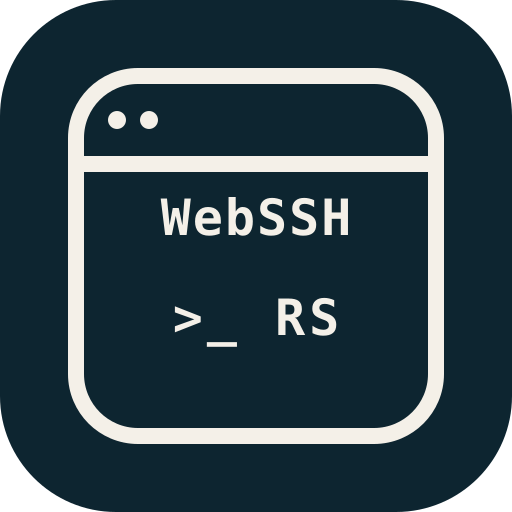
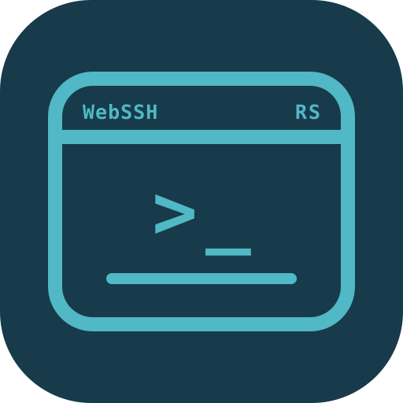
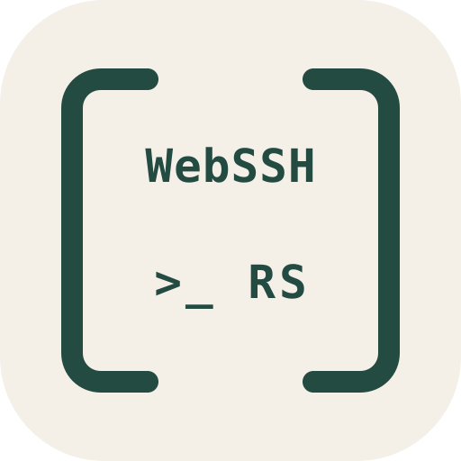
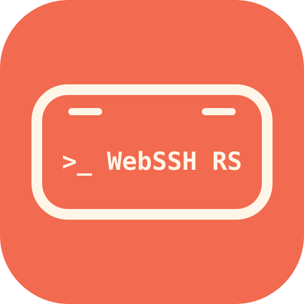
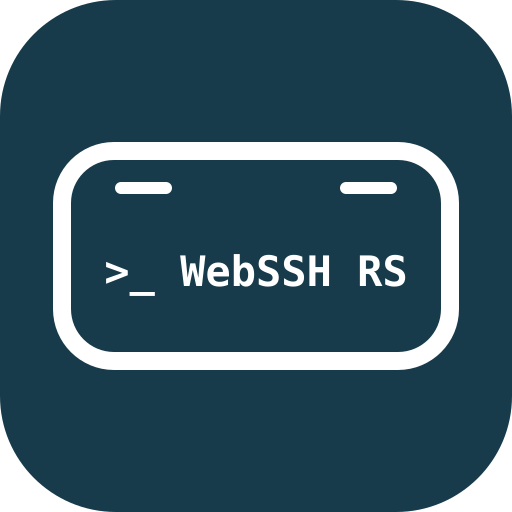
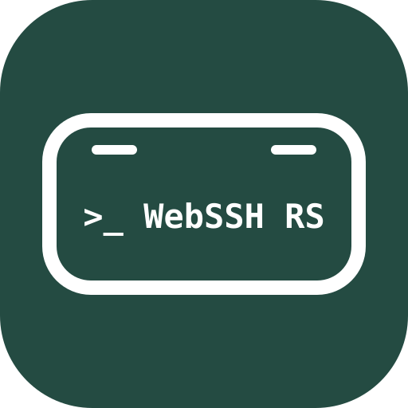

16 / Prompt Stack
WebSSH, prompt and RS arranged as a compact terminal stack.
wordmark-stack

17 / Prompt Split
WebSSH and RS sit in the terminal header while the prompt leads.
wordmark-split

18 / Prompt Bracket
Open brackets give the wordmark a clean, icon-like frame.
wordmark-bracket

19 / Prompt WebSSH Inline
The same minimal terminal badge, reordered as prompt first: >_ WebSSH RS.
wordmark-inline

21 / Inline Blue
The same inline wordmark in a calm blue and white palette.
wordmark-inline-blue

22 / Inline Green
The same inline wordmark in a deep green and white palette.
wordmark-inline-green